Last modified: Fri Jul 16 11:30:53 HST 1999
Much of the information in Leap consists of sets of data objects with a consistent internal structure. For example, as you use Leap, you typically accumulate a set of "project" objects, each of which has associated with it a name, a description, a file set, a start timestamp, and so forth.
It is convenient and natural to manipulate these sets of objects using a tabular interface. So, to manipulate a project instance, you open the Ilio tool, which presents you with a table where each row represents a different project instance, and each column in the table provides access to the value of a field in that object. By filling out a new row in a table, you create new instances of these objects.
All of the Leap tools that present data objects in a tabular format adhere to a common "look and feel" and implement several standardized functions in their interface. This chapter documents these shared interface mechanisms. I will refer to this interface as the "Leap table viewer" in order to clearly distinguish them from the Leap output file format (which is often referred to as a "Leap table"). The current set of Leap table viewers includes Honu for defects, Naia for effort, Iole for size data, Ilio for projects, Puaa for projects, Pueo for defect types, Noio for Severities, Ulua for phases, Nene for Document IDs, Aama for size definitions, Kala for checklists, and Opihi for patterns. There are currently two Leap tools that are not table viewers and do not provide the facilities specified below: Io, the real-time effort recording tool, and Ahi, the preferences tool. The following screen illustrates one of the table-based viewers in Leap and annotates many of the features to be described in this chapter.
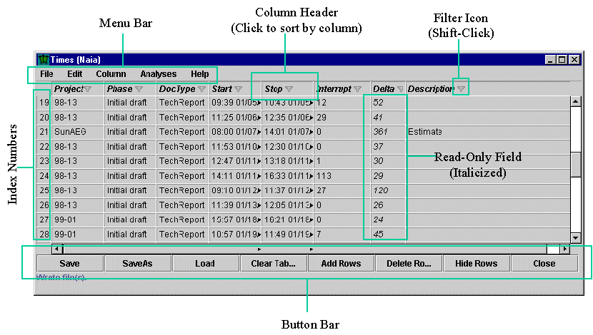
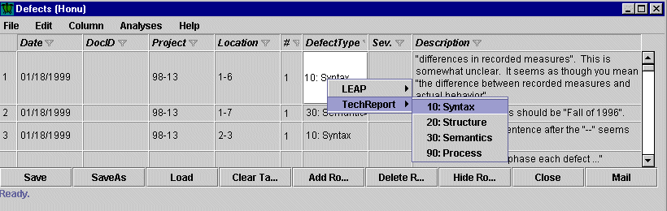
No fields in Leap require the use of popup menu, because Leap does not require you to predefine the set of possible values for a field before you can use it. Any field that provides a popup menu also allows you to simply type a value into it manually. This allows you, for example, to "try out" a defect type on a few entries before making it a part of the set of formally defined types.
Popup menus are dynamically updated. So, for example, if you go to the Pueo defect type definition tool and add a new defect type, it will immediately show up in the popup menu associated with any field in Leap that takes a defect type.
Unfortunately, Leap does not currently provide any visual indication of the fields providing popup menus.
Sorting can be quite useful. For example, consider a situation where your colleagues are performing a review of a work product you have authored. Each reviewer has sent you a Leap data file containing defects. You load each file into Leap and display them using Honu as follows:
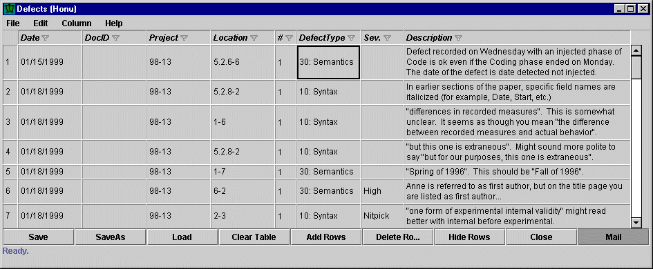
However, this results in a display of all the defects by the first reviewer, followed by all the defects by the second reviewer, and so forth. It would be far more convenient to sort the data by location so that you can fix or discuss the defects with one pass through the document. Clicking on the "Location" field column header accomplishes this:
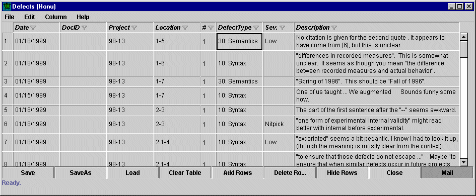
As you can see by looking at the "Location" field, the defects are now presented in sorted order by location within the document.
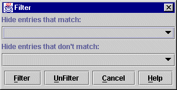
The pulldown choice lists allow you to select a single value from the current values of the field to match against or to not match against:
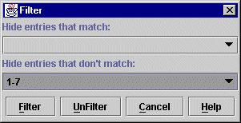
In this case, the filtering operation will hide all entries whose location is not 1-7, and the result is:
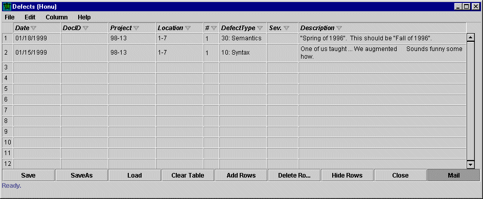
It is important to realize that filtering does not delete any data---it simply hides it from view. To show that data again, shift-click to bring up the Filter dialog box and press UnFilter. The above filtering example is used for fields containing strings; other dialog boxes are displayed when filtering based upon numbers or dates.
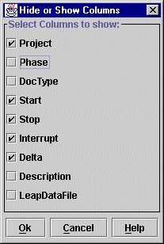
In the above example, I've already clicked on some boxes to change the default setting for the displayed columns. After pressing OK on this dialog box, Naia will present its data in the following way:
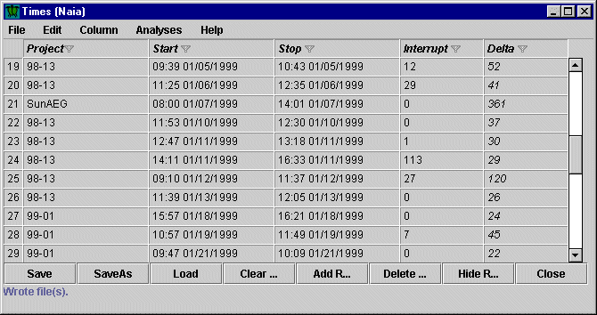
The set of displayed columns for a given tool is "sticky" between invocations of the tool. Each time you bring up Leap, it displays the set of columns last visible from the previous invocation.
One field is always hidden in all table-based viewers: the "LeapDataFile" This field contains a list of values indicating the file or files associated with this individual entry in the table. The LeapDataFile field is an internal field that Leap uses to keep track of where data should be saved. This is unfortunately a somewhat complicated subject, and for full details, you should consult the chapter on Saving Leap Data. At any rate, I do not recommend that you edit the LeapDataFile field by hand, and under most normal circumstances, you do not need to be concerned with this field or its value. However, its presence is a useful reminder of the fact that each row in a table-based viewer represents a single Leap data object, and that different Leap data objects can be saved into and loaded from different locations. (In fact, a single Leap data object can be associated with multiple files simultaneously! See, I told you saving was complicated :-)
Save
The Save button enables you to save out the contents of this table. Recall that a table can contain Leap data objects loaded from across several files, and that some of those may have been edited during this session. In addition, new objects may have been added during this session which do not have any file associated with them yet. So, the Save button is responsible for saving back to their originating files all of the entries which were loaded, as well as saving out new entries to a file for the first time. To accomplish this, pressing the Save button pops up a dialog box asking for the file location where new entries should be saved:
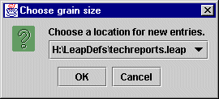
Note that you are given a pull-down menu of files to choose from, taken from the set of files providing Leap data objects to this table. Thus, the "Save" button requires you to save all new entries into one of the files you previously loaded containing Leap data objects displayed in this table.
(Note: as you can see, this screen dump illustrates a common bug in the current Swing implementation: the title associated with Windows menus is not updated.)
If all of the entries in the table are new entries, then Save displays a standard File Chooser dialog box instead:
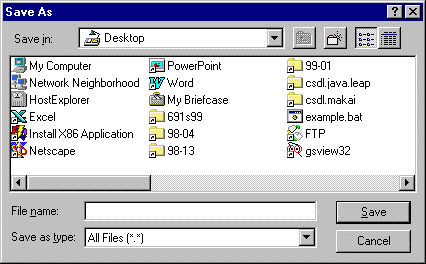
Load
The Load button pops up a standard File Chooser dialog box, as illustrated below:
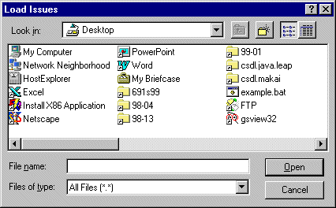
After selecting a file and pressing "Open", the contents of that file will be loaded into Leap. Note that this operation is not specific to the particular table-based viewer in which you pressed Load. In other words, the file you load may or may not contain Leap data objects belonging to the particular table, but the data will be loaded just the same. For example, if you are in Naia, press Load, and load a file containing only defect entries, then nothing will be displayed in Naia but Honu will now be augmented with new data.
Clear Table
The Clear Table button removes all of the entries from the current table-based viewer. Pressing the Clear Table button pops up the following dialog box:
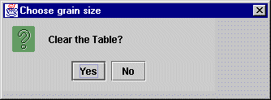
If you press "Yes", all of the entries in this table will be removed and no longer loaded in Leap. This operation is destructive and not particularly forgiving: if there are new entries in this table or if you have edited old entries, you will not be prompted to save them before the table is erased. Of course, you can always reload the file or files from which any entries were loaded, but any changes or new additions will be lost.
Add Rows
When a table-based viewer is initially displayed, it provides 10 blank rows in addition to the rows containing Leap data objects. During a session, it is possible to fill up these 10 blank rows with new data objects. Pressing the Add Rows button adds 10 additional blank rows so that further new data can be added.
Delete Rows
To delete a Leap data object in a table based viewer, you can select the row containing the data object and press the Delete Rows button. To select a row, click in the index number on the left hand side of the row. The corresponding row will be highlighted. To select a range of rows, click in the first row and drag the mouse vertically to select adjacent rows. For example, here is the Honu table-based defect viewer with one row selected:
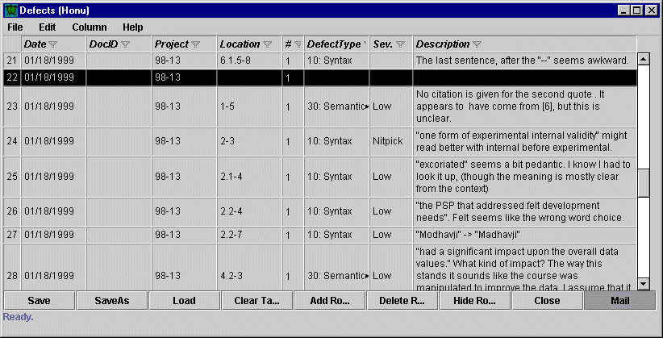
Once you have selected your rows, pressing the Delete Rows button will bring up a dialog box asking you to confirm this deletion. For example, having selected the row above, pressing Delete Rows will result in the following dialog box:
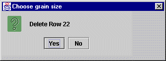
Pressing yes will confirm the deletion and the row will be deleted. All subsequent rows will be updated with new index values.
Note that there is no "undo" operation for deleted rows.
Hide Rows
The Hide Rows button provides you with a row-based, rather than column value-based, approach to filtering. Hide Rows is similar to Delete Rows in that you must first select a row by mouse clicking over the index number associated with the row to be hidden, and dragging vertically to select additional adjacent rows if desired. Once the row or rows is selected, pressing Hide Rows brings up a dialog box confirming that you wish to filter the specified Leap data object. For example, if I selected the object in at index 24 to filter and pressed Hide Rows, the following dialog box would appear:
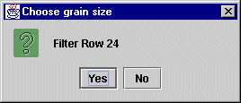
After pressing Yes, the Leap data object in row 24 would be hidden from view. You can tell that the object is hidden because the index value is now missing:
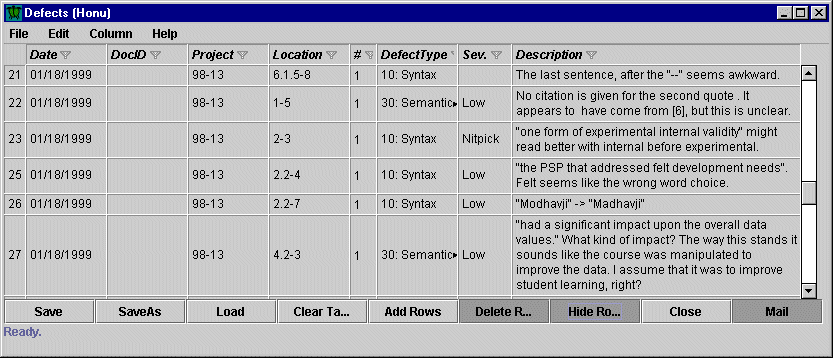
If the object had been deleted, index value 24 would have been reassigned to the next data object.
To redisplay the hidden rows, you must UnFilter the table using standard Filtering mechanisms. This involves shift-clicking on any column containing the Filter icon, which brings up a dialog box containing an UnFilter button. Pressing this button will unhide all hidden rows as well as all other data hidden using filtering.
For more details on Filtering, see the section earlier in this chapter.
Close
The close button closes the window containing the table-based viewer tool. It does not have any destructive effect on the Leap data, however. You can reselect the tool from the Leap Toolset window and all of the data you entered will be still there.
Close does not implicitly save the data.
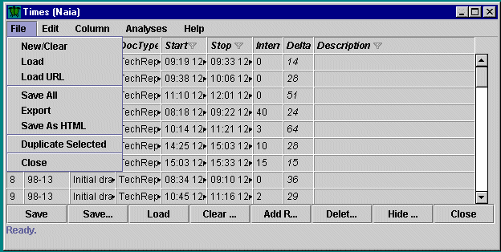
The File menu facilities include:
New/Clear
"New/Clear" is bound to the same operation as the "Clear Table" button. See the above documentation on the Clear Table button for details.
Load
"Load" is bound to the same operation as the "Load" button. See the above documentation on the Load button for details.
Load URL
The "Load URL" menu item brings up a modal dialog box allowing you to type in an URL:
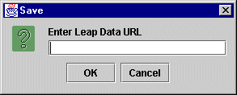
If the URL points to a Leap data file, then this file will be loaded. Unlike Leap data files on a local file system that you load using the "Load" button or File menu item, Leap data loaded via an URL cannot be saved back to its originating location.
Save All
The "Save All" menu item allows you to save out all the currently loaded Leap data files and any new entries. Invoking Save All brings up the Save Tables modal window:
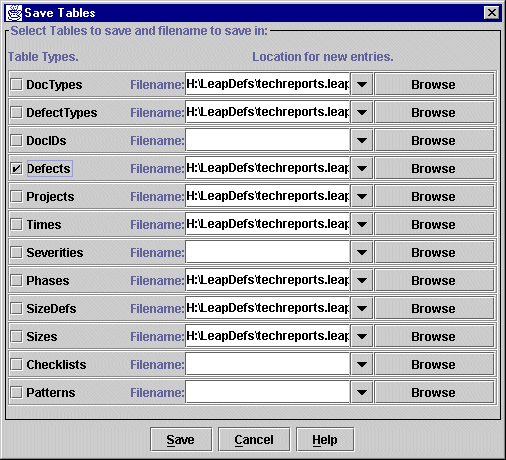
This window shows you via the checkbox which tables have unsaved and/or new entries in them, and allows you to specify into which file you would like to save the new entries. For convenience, a pull-down list provides you with access to all of the files that have contained entries for that particular table type. The Browse button brings up the standard File Chooser window. In the above screen, only the Defects table contained new or modified entries, and so that is the only table that appears with a check in its checkbox. For more details on the somewhat complicated topic of Saving, see the Save chapter.
Export
The "Export" menu item allows you to create one or more new Leap files containing data from one or more Leap tables. Selecting the Export menu item results in the following dialog window:
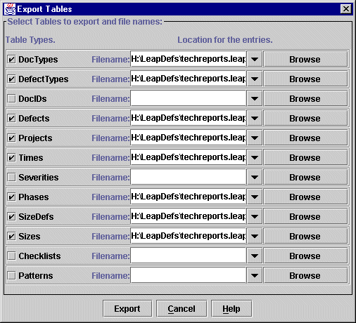
Notice that in this case, every table containing any data at all is checked by default. You should uncheck any tables you do not wish to save to the new file location, then type in the new file or files where you wish the table data to be exported. Note that Exporting does not change the current state of your Leap internal files. In other words, if, after exporting, you modify an entry in a table and then press save, it will be saved out to the original location it was read from, not to the location where the table was exported. Exporting produces a copy of your Leap data files without changing the internal file membership of individual entries.
Save as HTML
In many situations, the contents of a Leap table is well suited as the basis for a "report". For example, you might want to print out the contents of Honu or make the current contents of that table accessable via the Web to another person.
Since Leap data files are output in a constrained form of HTML, you could in some sense do this simply by providing an URL to your Leap data file or including it in a larger HTML document. However, most Leap data files contain fields devoted to particular contexts that may not be relevant to the purpose at hand (for example, the "Doc ID" field if the entire table concerns only one document).
The "Save as HTML" menu item enables you to easily create an HTML formatted version of the current table, where only visible columns and rows are output to the HTML file. This allows you to customize the set of columns (i.e. data fields) present in your report.
It is important to keep in mind that the "Save as HTML" menu item does not produce a file that can be read back in to Leap, unlike the normal Leap data files (which, only coincidentally, are also formatted as HTML.)
Duplicate selected
"Duplicate selected" is a poorly named menu item for a very useful operation. When using Leap, you will sometimes find yourself in a situation where you want to merge the contents of one Leap data file into another. In my workaday world, this frequently happens when I use the LOCC system to generate a Leap data file containing size information for a work product. LOCC typically generates a single file containing size information for each work product. However, I have another Leap data file called techreports.leap in which I am accumulating data about all of my tech report projects, including their size. What I frequently want to do is load the data file generated by LOCC into Leap, and have it saved out into my techreports.leap file. For example, the next screen illustrates my use of LOCC to generate the current size of the file I am now editing, tables.html, and save the Leap data file into the file tables.siz:
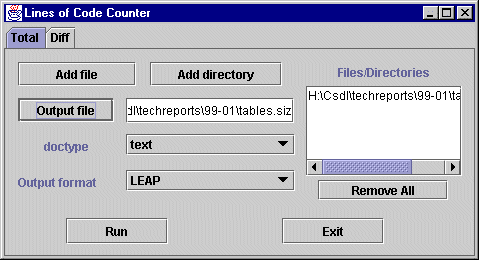
After loading this file into my Leap process, the Iole table viewer (after some hiding and showing of columns) shows the following:
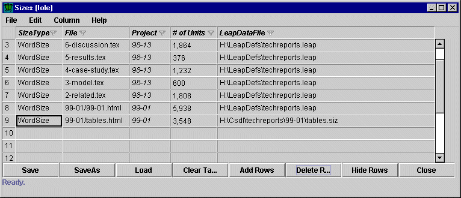
As the above screen illustrates, all of my old sizes have been saved in techreports.leap, but the last size entry is from tables.siz. If I quite Leap now, then the next time I start up, I will have to load both techreports.leap and tables.siz to recover the full contents of this table. It would be more convenient if I could easily tell Leap to save that entry into techreports.leap. This is the goal of the "Duplicate Selected" menu item. First, select the row you wish to add a new LeapDataFile entry to:
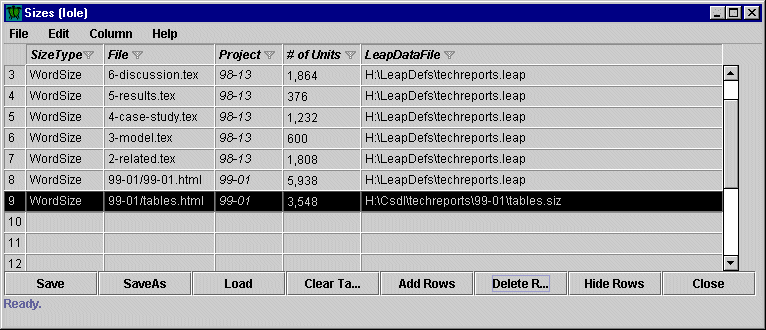
Next, invoke the Duplicate Selected menu item, which results in the following dialog box:
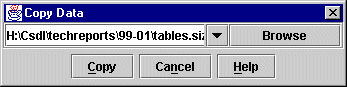
Next, select the file in which you want this entry to be saved out to in addition to its original file. In my case, I want this entry to be included in the techreports.leap file:
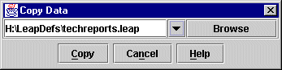
Then press "Copy". This has two results. First, the specified file is added to the LeapDataFile entry for each of the selected entries. Second, all of the entries in the table containing LeapDataFile entries are saved out. The screen below illustrates the new LeapDataFile entry for the selected size data:
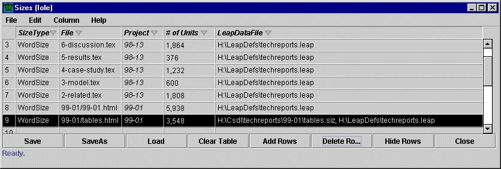
Now I can quit Leap, and the next time I bring it up, I can load techreports.leap and all of the associated data will be included.
Close
The close menu item invokes the same operation as the Close button. See the above documentation on the Close button for details.
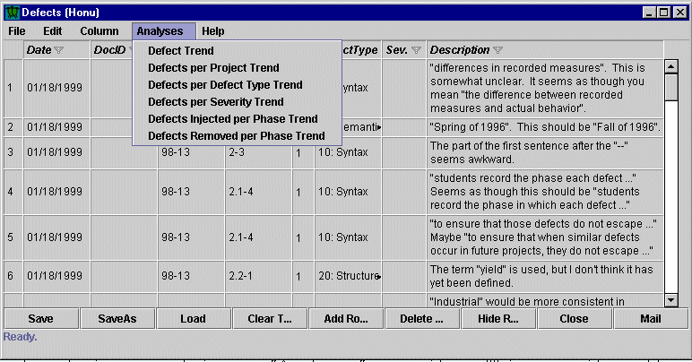
Table-based analyses focus on the data in that single table and other Leap definitions, and as with all analyses, reflects the current filtering in effect. If you filter out or hide data, that data will not show up in the analysis.